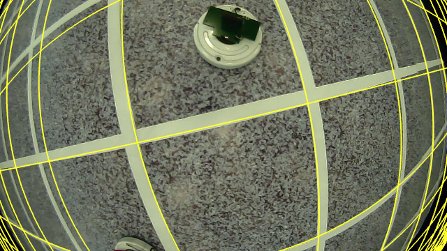
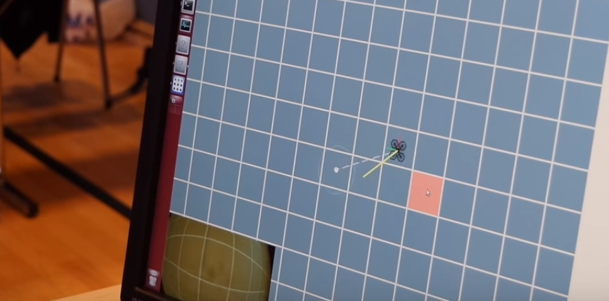

Ascend NTNU Technical Memo
IARC 2016 Postmortem
Simen Haugo (simen.haugo@ascendntnu.no)
September 4, 2016
Ascend NTNU competed in the seventh mission of the International Aerial Robotics Competition (IARC), after one year of operation. The team began as six and almost tripled in members, over half of whom worked at Kongsberg’s Innovation Lab during the summer. We participated in the competition at the American venue in Atlanta, Georgia, and received third place, along with the best T-shirt design award.
In this report, we describe our team’s approach to the scenario posed by the mission. First, we present a short summary of our goals and our results, followed by detailed descriptions of our system and issues therein.
At the outset of the summer at Kongsberg, we set up the following goals that we hoped to accomplish. A few of these were labelled must-haves, some were nice-to-have, while the rest were left in the don’t sweat it category.
The highest priority this year was to build a navigation system that would be robust against occlusions, unknown floor textures, and changing flight altitude. Following that priority was the ability to follow paths in the arena, while detecting and avoiding obstacles. We also wanted the ability to detect ground robots located directly beneath the drone. At the same priority, we wanted to acheive autonomous take-off and landing on a static surface. Finally, at the lowest priority, we wanted to integrate a high-level strategic planner, which would provide waypoints for a path following controller.
Our localization system detects the grid in a downward facing wide-angle camera, and fuses these measurements in an extended Kalman filter. It is able to track the drone’s position in the arena, and has been used successfully at full-scale tests and at the competition venue. It is unable to measure the global position, which means that the tracker must be initialized with the correct position at startup, and also that the drone is unable to automatically recover from drift.
We implemented a straight-line path following velocity controller, where the path waypoints are specified by an operator through a graphical user interface. The drone was able to follow paths accurately and robustly, whilst avoiding obstacles, during several full-scale tests, but less reliably at the competition venue, likely due to bad height estimates.
The collision avoidance algorithm uses raw LIDAR scan measurements of nearby obstacles to modify the desired velocity, from the path controller, as needed. The downsides of our current implementation is that it is memory-less; i.e. it forgets about obstacles once they enter the LIDAR blindzone. Furthermore, it ignores obstacles that are either completely above or below the scanned plane.
We can detect ground robots in the near vicinity of the drone using a fisheye camera. However, the detector suffers from many false positives and relies on uniform lighting conditions. It also does not perform any filtering, meaning that detections only spuriously appear each frame without any form of consistent tracking.
We were unable to perform any form of interaction with the ground robots, as we did not find the time to focus on this. I.e. we were unable to land on top, or in front, of a ground robot. As such, the high-level planners that we developed have yet to be integrated or tested on real-life scenarios.
The team papers for this year will be published at the symposium website later this year. Until then, some videos of team presentations are available on YouTube, including
There were 22 teams signed up for the competition at the American venue, but less than half met up at the competition. The teams we got to observe were
None of the teams were able to successfully execute the entire mission, but we saw promising results for parts of the mission, one of those being navigation. The most common position estimation method used was based on combining optical flow, i.e. using the commercial PX4Flow sensor, and tracking keypoints, i.e. the intersections between the grid lines.
None of the teams successfully demonstrated collision avoidance. Pennsylvania have shown lab results of autonomously tracking a moving ground robot, as well as touching a stationary ground robot. During the competition they had problems hitting the robots precisely.
In other words, we did not see any herding taking place this year. However, there may still be hope. At the time of writing, the Chinese venue have not yet held their competition, as it was delayed until the 22nd through 25th of september.
Below is a summary of the main issues with our current system, along with some thoughts on where focus should be directed next year.
This system — our only source for position estimation — is not robust enough for low-altitude flight. This may become a bigger problem once we begin to interact with ground robots, especially if we expect to perform position-based control all the way, as opposed to switching to an image-based approach whenever we try to land on a robot. Although it might work to do position-based control in local coordinates, as opposed to global coordinates, during interactions. I.e. you consider the interaction target and the drone relative to each other, instead of relative to the grid origin.
We could consider complementing the filter with optical flow measurements, as done by other teams (though to not-specified degrees of success), or simplify some assumptions we made. For example, we assumed that the grid may be overlaid on top of a pre-existing pattern of lines or circles, and developed a system that could still identify the correct grid. If we make more specific assumptions about the floor texture, we can get away with a simpler and more reliable system.
We have a plan for implementing bias removal through detecting the arena edges. This may be used in conjunction with an autonomous initialization phase, as opposed to a manual initialization, where the drone determines its absolute position by searching for edges.
In its current setup, the library we use for streaming video wirelessly, is not reliable. It will often crash during flight, thus disabling any components that rely on video streams, and appears to crash more frequently at spectrally cluttered environments such as the venue. We have not yet determined the causes for crashing.
The positioning system, collision avoidance plugin and parts of the ground robot detector can run completely on-board simultaneously with the Intel NUC. If we switch to a smaller drone with a weaker on-board computer, we need to debug GStreamer or search for alternative streaming methods.
Take-off (from propellers turned off to flight) was deemed as being unsafe, as it appeared to require an unnaturally large proportional gain in the velocity controller. Due to time constraints we were unable to determine the cause for this, and should be investigated further.
Landing on the floor works some of the time, but can fail by bad landing detection. We can likely improve this by tuning some thresholds in the detection.
We also need a way for the drone to verify that it is actually safe to land or take off, which brings us to the next point.
Works well, as long as all obstacles are in the plane scanned by the LIDAR, which is not necessarily the case. Firstly, we misread the minimum height of the obstacles that would be present at the venue, and would need to fly impractically low to keep all obstacles in the scanned plane. Secondly, it would probably be quite difficult to detect the other team’s drone — during mission 7b — with the LIDAR.
We would like something that is more general, that can verify that it is safe to descend and perform a landing, that can avoid an incoming drone of the opposing team, and avoid obstacles that are not always in the sensor’s field of view. We are therefore considering moving away from a planar LIDAR, and over to some 3D sensor.
Autonomous flight was fairly robust at heights between 1 and 2 meters. Lower or higher altitudes causes problems for the grid detector, but that may be improved. The velocity controller used for path following could use some gain tuning to acheive less overshoot.
Height estimation turned out to be very difficult. Reflective surfaces induced all sorts of weird behaviour in the LIDAR-Lite range sensor, such as spikes over 9 meters or down to zero. This was especially bad at the venue, and caused problems for the grid detector which depends on good height estimates.
We tried a mix of approaches, one based on filtering out the color of the top plates (red and green) and doing simple checks on the scale, and another approach based on matching templates.
The color-based method is very dependent on the lighting in the room, but this can likely be improved. The template matching method is too slow to run on-board together with everything else, and therefore needs video streams. It needs further work to be more robust and give less false positives.
Initially, we attempted to create a detector that would work on the side cameras as well as the downward facing camera. We should have restricted our focus on the downward facing camera, as this will be needed anyway to do interactions. For the coming year, we should revisit some ideas we tried out, and have a closer look at the related work by other teams from previous years.
Landing on top of, or in front of, ground robots has not been in focus this year. Many interesting problems begin to surface once we consider this topic. For instance
Should the controller work with 3D positions of the drone and the target in a global frame? A local frame?
Should it be an image-based visual servoing controller that works in image-space?
How can we estimate the center point of the robot such that the landing point remains consistent during descent?
How do we land in front of a ground robot? To accomplish this we need to estimate the path of a ground robot and plan our landing ahead of time.
Manually interacting with ground robots
Finally, how do we decide which robot to interact with? Looking forward, a big bottleneck will likely be the lack of a meaningful map of the drone’s surroundings. In order to actually accomplish the mission, we need something that will let us make decisions based on what targets are nearby and their direction of motion. It would be nice if this map generalized to other nearby robots, such as obstacles or other drones.
We developed two algorithms, one fancy and one simple. The fancy algorithm depends on full knowledge of the position and velocity of each robot, and computes an optimal set of waypoints and associated actions. The simple algorithm only requires knowledge of the robots directly beneath the drone, and switches between herding one robot at a time, and searching the arena in a predefined pattern.
Something we have not taken into consideration, is what we should do if a ground robot stops moving permanently, while inside the arena, which happened once during the competition. Other edge cases, such as recovering from a bad interaction — another thing that happened during the competition — have not been considered. Naturally, none of them have been tested in a real-life scenario, since we can’t interact with anything yet.
The seventh IARC mission seeked solutions on the following topics.
In the following subsections, we describe the system in closer detail, and provide a more precise description of the problems that we have met.
The components that made up our drone for this year were the following.
For a complete overview, including names for all the parts, see our team paper for the 2016 symposium.
Video streaming was one of the things that we decided we wanted to have from early on, but ended up not using during the competition for a variety of reasons.
Our intention was to connect all five cameras (the side cameras and the downward camera) to the Intel NUC, and stream all of these to the ground station. Since the downward camera stream is also used on-board, by our positioning system, whatever streaming system we go for would need to support storing video frames from this camera on-board. And this all needs to occur with low latency.
An attractive option, at the time, was the GStreamer library. It supports sending and receiving streams over UDP, thus allowing for a uniform interface across all applications, regardless of whether they run on the drone or the ground station. It also supports splitting streams, whereby we could send the downward camera frames both to an on-board application and to the ground station.
In the receiving application, one can use the GStreamer library API to capture each frame in order as they arrive. You can optionally specify any scale or color conversions that should occur in the decoding of the frame, before receiving the resulting raw bitmap of pixels.
In hindsight, we realize that GStreamer introduced several issues, primarily falling in the category of runtime ambiguity. GStreamer does offer alot of functionality in a highly abstracted interface. While easy to use, this does incur a cost of being hard to understand. Decoding, encoding and conversions are hidden inside the black box, and it is unclear how much latency is involved between when the camera stores a frame, and when the frame is accessible in a local application. It is also unclear what capture options are used. For example, did the library detect that a Logitech C920 camera has built in H264 hardware compression?
The ambiguity made it difficult to debug the system when things went wrong — and things did go wrong. GStreamer had a tendency to abruptly crash on the transmitting side, with an undescriptive error code. This happened both in controlled environments at Kongsberg, and at the competition venue, at which we had no control over the Wifi spectrum.
At the competition, GStreamer crashed much more frequently, to the point where we could not even run for a full minute. No significant changes had been made to the on-board applications, aside from tuning of parameters, from when we last tested the system at Kongsberg — where we could have full 10 minute runs without crashing. This may indicate that the fault may be caused by spectral clutter in the environment.
This was deemed as too unsafe for flight, so we disabled streaming across the network, and fell back to only streaming to localhost, thereby cutting all ground station applications that relied on video feeds.
The grid detector uses estimates of the drone’s height, pitch and roll, and provides an absolute measurement of the drone’s yaw angle and its planar displacement, modulo the grid tile. This measurement is used in an Extended Kalman Filter that estimates the drone velocity, position and yaw angle, in addition to bias states for the accelerometer and gyro.
This is different from flow-like methods that track features across video frames, and integrate velocity to yield position. Instead, we can produce global measurements of the position, by adding the tile-relative position — measured by the grid detector — to the previous estimate of the global position — tracked by the filter.
Grid detection at Innovation Lab.
We detect the grid per frame by the following process:
Segment pixels: We roughly segment pixels, henceforth called features, that are likely part of the grid. We use a color filter, followed by a sobel edge detection filter. The idea being that grid lines are characterized by a sharp jump in image intensity — if not, i.e. if the floor has a high-frequency texture, then we try to seperate the grid from the texture through a color filter.
Fisheye correction: We efficiently correct for the fisheye distortion by applying a calibrated fisheye-to-pinhole model on the list of segmented features. The number of features (10k-40k) is typically atleast an order of magnitude less than the number of pixels (640x360=230400), so this is much faster than correcting the entire image.
Extract lines: The segmented and undistorted features are used to estimate lines present in the image using the Hough transform, known to be robust against occlusions and small errors.
Fit a grid model to the observed lines: Finally, we search for a set of four lines that most likely form a grid tile. We use the height, pitch and roll of the drone to transform the lines into a partial world coordinate frame, such that a grid tile will be characterized by four lines, forming 90 degree angles, pairwise seperated by 1 meter. The best tile minimizes two error metrics on angles and scale.
The video above shows how the grid detector performs using attitude estimates directly from the Pixhawk flight controller, and height measurements from the LIDAR. You might spot the grid zooming out at the 0:16 second mark. That was caused by a spike in the LIDAR sensor, due to the reflective surface on the tape we were using.
The detector runs completely on-board at video-rate (60 fps). It is robust against occlusions, such as moving targets or debris, and can be tuned to work with different surfaces if the color of the grid lines are sufficiently distinguishable from the floor. It is, however, very case-specific, and will naturally not work if the grid is removed in a future mission.
Once we have identified the grid in the image, we can compute the camera’s offset relative to it. To see this, let denote the world-space frame, which is placed with the x-axis going along the red line at the bottom, the y-axis going from the red line towards the green line at the top, and the z-axis going upwards, forming a right-handed coordinate system.
Let be the 2D coordinate of the camera in world-space coordinates relative to the grid origin. We can write this as the sum of an integral multiple of the tile size, and an offset relative to the tile’s lower-left corner.
Since and are unknown integers, we cannot actually compute and . However, taking the modulo of on both sides, we get
The idea is that we measure the angle of the grid (which is the negative of the drone’s yaw) and the tile offset using the detected tile lines. We rotate the tile offset vector by the grid angle to get it into the actual world frame, and then we can compute the camera position modulo the tile size.
Unfortunately, we cannot determine from a single image which point is the true lower-left of a tile. Thus, there will be four choices for this point, and followingly four possible solutions for the camera position and yaw angle, that all agree with the image.
The grid detector outputs all four of these. In each case, we measure the grid angle from the two lines that make up that case’s corner, and compute the associated offset vector. The result is a set of four yaw angles, each seperated by 90 degrees (since the grid tile has 90 degree corners), and four associated tile-relative positions.
All four measurements are used in the EKF, which produces a global measurement by first choosing the yaw angle closest to the previous estimate; then, combining the associated offset with the previously estimated global position. The latter is done by rounding the global estimate to the nearest tile multiple, giving an estimate of which tile we are in ( and ), and then adding the offset vector to get
During our test flights, and the competition, we would manually initialize the position estimate to the true position, since we had no system for bias removal, nor any search behaviour that would actively try to identify unique landmarks.
Another problem that probably deserves more attention is extrinsic and intrinsic calibration of the camera. Extrinsic calibration involves quantifying how the camera is mounted on the drone, in terms of rotation and translation, with respect to the pose estimated by our filter. Intrinsic calibration, on the other hand, involves finding the fisheye model parameters that we use for rectification.
Both of these have an effect on the estimated grid, as seen in the image below where the grid is reprojected back into the original video. We did some rudimentary extrinsic calibration by dragging some sliders until the reprojected grid looked good, which is not ok, and it shows in the image below. If both calibrations were perfect, the reprojected grid would overlap with the observed grid much better.

Granted, the roll and pitch estimates we receive from Pixhawk are not always spot on either. So maybe we should also slap on a 6 degree-of-freedom pose refinement, after we have identified the grid, for an even better fit.
However, the actual effect of calibration on the estimated position is likely not too bad, considering that we have flown with the system for 5-10 minutes, performing complex maneuvers, and only drifting one or two tiles.
We realized we needed redundance in the position estimation, since it is such a critical component (atleast with our current strategy; we have visited the idea of building a drone that only knows the direction towards the green line, but not necessarily where it is on the map). To this end we developed an absolute positioning scheme based on identifying the corners of the arena, where a white line intersects either a green or a red line. Each corner is unique, and can therefore be used to estimate the absolute pose of the camera.
Pose estimation is performed by matching four observed intersection points near a corner, with four corresponding points in a world-scale grid model, and computing the camera rotation and translation that minimizes reprojection error, that is, the sum of squared distances between the observed points and the model points projected by a calibrated pinhole camera model.
We did not envision this system to be used for position-based control of the drone, but instead as a very reliable measure of absolute position, that can correct for drift accumulated by the line-based position. Since our implementation was quite demanding in terms of runtime, it would need to run on the ground station.
The system did not end up being used during any of our full-scale flight tests at Kongsberg, nor during the competition. One of the reasons being that the system was not robust against different ground patterns. During our first test, where the grid was mixed with pre-existing lines, we found it very difficult to reliably identify corners based on color filtering alone, particularly at long distances.
During the second full-scale test and during the competition, the grid pattern was not mixed with pre-existing lines, which means that the system may have been able to run, atleast if we get close enough to a corner. Nevertheless, the system was cut due to streaming problems.
The system requires all four side camera videos to be streamed to the ground station. During our second full-scale test, we found that enabling these streams correlated with a higher frequency of GStreamer crashes, and we decided to not use this positioning system for the competition. This was a good decision considering that GStreamer was even more unreliable during the competition, meaning that we would not have been able to use the system anyway.
Obstacle avoidance was a late addition to the system, and was used extensively during our full-scale tests. Our obstacle avoidance algorithm is based on the work of Jackson et al. [1], which was newly published during our work at Kongsberg.
As described in their paper, obstacle avoidance can usually be dichotomized into two classes: Map-based or reactive. Map-based techniques are usually tied into whatever high-level planner is used to execute the mission, and
Jackson et al. proposes an implementation of a reactive obstacle avoidance plugin (ROAP), that can be combined with a high-level planner. Their algorithm foregoes the usage of a global map to perform avoidance, and instead works directly with body-frame measurements. The properties of a reactive algorithm, as opposed to a map-based algorithm, should be
We had to make several modifications to the proposed algorithm, such as relaxing the assumption of a full 360 degree laser scan down to a 270 degree scan, as well as improving the behaviour in cases where multiple obstacles approach the drone from opposing sides, where the original algorithm could potentially fail to avoid either obstacle.
Our implementation uses the raw laser scan from the planar scanning LIDAR and modifies a reference velocity signal, generated by the path following controller, to avoid obstacles while attempting to move in the same direction.
In our current implementation it does not have any memory or perform any inter-scan filtering. The effect of this was witnessed during one of our full-scale tests, where the drone successfully avoided an obstacle, located on top of a waypoint. Once it passed the obstacle — placing it in the LIDAR blindzone — the drone began to fly backward towards the waypoint, ignoring the obstacle.
This motivated us to implement a yaw controller that rotates the drone to never fly with the LIDAR blindzone in the direction of motion.
This was not worked on until a few weeks before the competition. We had problems with autonomous take-off, in that the velocity controller required an unreasonably high gain to actually take off. Oddly enough, we could freely adjust the height setpoint after taking off, with a much lower gain.
We did not feel comfortable about this — our drone already has a track record of hitting ceilings — so we decided to cut it and come back to the problem later.
Autonomous landing was done by setting a negative height setpoint and using the same velocity controller. The motors were disarmed once the drone was close enough to the ground. To absorb impacts we fitted a layer of cushioning beneath the drone.
However, the drone would occasionally be floating above the floor instead of disarming, possibly due to bad height measurements. The noise in the range sensor is already in the order of magnitude of centimeters, and reflective surfaces can cause large spikes.
We got more reliable height measurements by calibrating the barometer bias whenever we got good lidar measurements, and using the barometer whenever the lidar gets spiky. But we should probably take a look at different height sensors next year that are not as affected by reflective surfaces.
Detection of ground robots received attention from three team members this year, as well as some non-team members in a student project for the TDT4265 computer vision course.
Object detection is a gigantic field, and there are many approaches that may seem like a good idea. We tried several things, including matching SURF features, matching templates, filtering color, detecting circles, various morphological operations.
At the competition, the approaches we had actually tried to integrate were circle detection, color filtering and template matching. The idea being that the slow, but hopefully very accurate, template matcher would provide initial seeds for tracking, while high speed tracking could assisted with color or circle detections.
Unfortunately, all of the above approaches have their downsides, and don’t actually work in real conditions out of the box. For example, lighting conditions cause problems for color filtering approaches that depend on the top plate having a constant color. Furthermore, the top plates are not ideal diffuse reflectors, so you also get specular highlights that are especially strong when directly above robots.
Lighting conditions is also problematic for template matching approaches, where you provide a reference image of a ground robot, and try to recognize it in the image. Additionally, the fisheye distortion drastically affects the appearance near the edges of the image.
We did not find the time this year to work on the tremendous problems involved in actually interacting with a ground robot, moving or stationary. Of course, we could have tried the simplest thing and just turn off the motors anytime we detect a robot below us, but that is not very controllable nor reliable.
Firstly, the drone is too large (and expensive) to simply be dropped and hope that it lands safely and correctly.
Secondly, with our current detectors, we have no measure of the likelihood of a detection being a false positive or not. This is because we only run the detectors on each frame independently, without performing any filtering or tracking.
We foresee detecting, tracking and interacting with ground robots will be a major focus the coming year, and will need attention from both the control group and computer vision group.
Fancy planning algorithm in action (4x speed)
The AI took a backseat during the summer, since there were just so many other problems that needed to be solved. However, prior to the summer, we had two master students who made a very fancy algorithm, that tries to optimally solve the mission, and we also made a much simpler algorithm that tries to not-necessarily-optimally solve the mission with much lower demands on information.
The fancy algorithm can successfully herd all ten robots across in less than 10 minutes — averaging at about 8-9 minutes. It does this by modelling the herding problem mathematically and formulating it as an optimization problem called Time-Dependent Orienteering Problem with Time Windows. The goal in the optimization is to find a sequence of waypoints and actions that maximize expected reward. Metrics such as time-of-travel, likelihood of a successful interaction, or a target’s distance to an obstacle or the edges of the arena, can be used in the design of the reward function.
Unfortunately, it depends on full state knowledge — i.e. it assumes we know position, velocity and time until next turn for all robots — something we do not have, and which remains an elusive goal.
The simple algorithm tries to circumvent this by relaxing the assumption. Instead of knowing the state of every robot, we can only measure the state of those directly below us. Instead of aiming for optimality, this strategy aims for runtime predictability and ease of integration. The motivation for this being that when you have an uncertain and fragile system, you don’t want the planner to make sudden or unintuitive decisions that make it difficult to track down the source for errors.

Since integrating our AI strategies was not feasible in the remaining time before the competition, we tried to come up with other ways to showcase our system — localization, collision avoidance and autonomous take-off.
We made a simple graphical user interface, where the drone, a view of the downward camera and obstacle detections were overlaid on a 20x20 grid pattern, representing the arena. The user could click on a tile to mark up paths, both single lines and closed loops, and the drone would try to follow them.
This worked fairly well. The application keeps track of the next location to go, and advances the location along the path once the drone gets close enough.
We compute a desired velocity based on where we think we are, and where we want to go. The velocity may be modified by the collision avoidance algorithm, if there are things in the way. The velocity is used by an internal controller in the Pixhawk firmware. We also control the yaw angle to orient the drone along the path and keep the visible LIDAR region towards our next location.
We ended up building a large drone. While that meant we could pack a lot of good gear on it, it also made it more difficult to do testing. A drone this big can cause a lot of damage to itself and to nearby people, if things go wrong. In hindsight, it would have been beneficial with a smaller drone — atleast for testing — as we wouldn’t need to evacuate the room and have everyone on guard as it flies around.
ROS is intended to solve the inter-process communication problem, meaning, sharing data between processes. Despite most operating systems already having several methods for doing this, there is no cross-platform solution in the standard C++ library.
For various reasons, we decided to use ROS, a third-party library, for this. Unfortunately, using ROS means you make several costly sacrifices. One of those is due to the build system.
The build system used by ROS dramatically worsened the ease of iteration for our programmers. Not only does it spam the terminal with unhelpful information each time, but it forces you to use a specific directory structure for all projects — and to invoke the compiler from a specific root in that directory tree — and last, but not least, it bloats your compile time.
In the final project, with all our programs, recompiling a single one of the programs took well above one minute on some laptops, and on our very powerful ground station, it still took about 30 seconds to one minute.
Long compile times makes development less enjoyable. And, contrary to popular belief, it appears that people don’t spend that spare time to plan their next action; instead, longer system response time appears to only ever worsen the response time of the programmer.
[1] Cushioned extended-periphery avoidance: A reactive obstacle avoidance plugin. James Jackson ; Department of Mechanical Engineering, Brigham Young University ; David Wheeler ; Tim McLain.